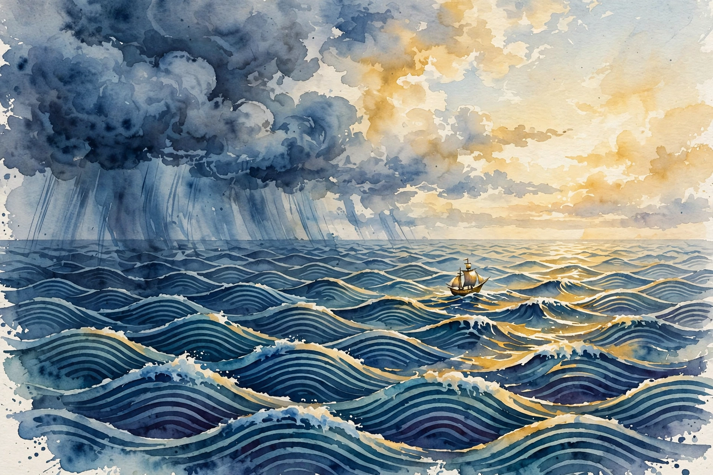

The Knowledge Project · Episode 7 · Companion
Ray Dalio
Ray Dalio lost everything in 1982 and rebuilt on principles. This companion follows the full episode and pulls out the ideas on radical open-mindedness, the idea meritocracy, the five-step loop, and what money cannot buy.

Illustration. Another one of those. Dalio reads history as repeating patterns and sails accordingly. AI-generated watercolor made for this page.
Watch. The official episode video. Use the chapter menu above to jump to any section of this companion as you listen.
The Wisdom Index: every nugget in this companion
Part 1
1982: The Call That Broke Him
Dalio built his business for seven years, then bet it on one call. He calculated that debtor nations could not repay American banks, which had lent out two hundred fifty percent of their capital. In August 1982 Mexico defaulted.
He was wrong about what came next, and the mistake nearly ended him. He lost his clients, his staff, and his money. He was so broke he borrowed four thousand dollars from his dad.
Banks lent 250 percent of their capital
Hover any bar for detail.
Source: episode transcript. Dalio says American banks had 250 percent of their capital out in loans to debtor nations.
Nugget 1 · Failure
Let the failure teach, then rebuild
What happened. Dalio's 1982 call was right about the default and wrong about everything after. He lost the firm and borrowed from his dad.
Why it matters. The worst professional moment of his life became the foundation of every principle that followed.
The principle. Study your failures instead of burying them. The tuition is already paid, so collect the lesson.
Part 2
Three Learnings
From the wreckage Dalio drew three lessons. First, radical open-mindedness: the tragedy is not being wrong but refusing to see it. Second, balance risks instead of betting the firm. Third, history repeats, so study it.
Open-mindedness became the operating system. He built a company where disagreement is the job and the best idea wins no matter whose mouth it comes from.
Part 3
The Idea Meritocracy
Bridgewater runs on believability-weighted voting. Every view counts, but views from people with a record of being right count more. Three believable people who disagree with the boss outvote the boss.
The design fights the brain itself. Dalio describes two minds inside each person: the thoughtful prefrontal cortex and the reactive emotional brain. Disagreement feels like an attack to the second and like data to the first. The tools, the pain button, the dispute resolver, the Dot Collector, exist to keep the first mind in charge.
Nugget 2 · Decisions
Weight votes by believability
What happened. Bridgewater scores people on their track records and weights their votes accordingly, so the best-tested views win.
Why it matters. Equal votes give equal weight to the expert and the novice. Hierarchy gives all weight to the boss. Both waste truth.
The principle. Track who is right about what. Then let the record, not the rank, decide.
Part 4
Principles as Algorithms
Dalio converts life into a five-step loop. Set audacious goals. Find the problems blocking them. Diagnose the problems to their roots. Design plans around the diagnosis. Do what the plans require. Then repeat.
Two lines carry the whole method. The first is his equation for growth:
pain plus reflection equals progress
Ray Dalio, in the episode
The second is his lens on history:
everything is another one of those
Ray Dalio on pattern recognition, in the episode
The five-step loop
Hover any step for detail.
Source: episode transcript. Dalio describes the five steps: goals, problems, diagnose, design, do.
Nugget 3 · Process
Turn pain into a procedure
What happened. Dalio runs every setback through the same loop: reflect on the pain, extract the principle, encode it as an algorithm.
Why it matters. Unprocessed pain just hurts. Processed pain becomes a rule that prevents the next one.
The principle. Write the principle down while the pain is fresh. Your future self will need it more than your present self wants to.
Part 5
Meditation and the Third Stage
Dalio practices Transcendental Meditation since 1969, when the Beatles' trip to India put it on the map. He credits it with the calm that lets the prefrontal cortex stay in charge.
In 2017 he moved from the second stage of life to the third: from winning his own success to the success of others, built without him. The book, the principles, the passing of the baton all belong to that transition.
Part 6
Money and Usefulness
Past basic needs, Dalio sees no link between money and happiness. The strongest link he knows is relationships. The second is feeling useful.
That frames his worry about basic income. Money covers the physical needs, but work gives people colleagues, purpose, and proof they can produce their own subsistence. He cites a Connecticut study: twenty-two percent of high school students are disengaged or disconnected, about one in five.
One in five students disconnected
Hover any bar for detail.
Source: episode transcript. Dalio cites 22 percent, about one in five, of Connecticut high school students.
Takeaways
- Study your worst failure until it yields principles. The tuition is paid.
- Weight decisions by track record, not by rank. Let believability vote.
- Run the five-step loop on everything: goals, problems, diagnose, design, do.
- Past basic needs, happiness comes from relationships and usefulness, not money.